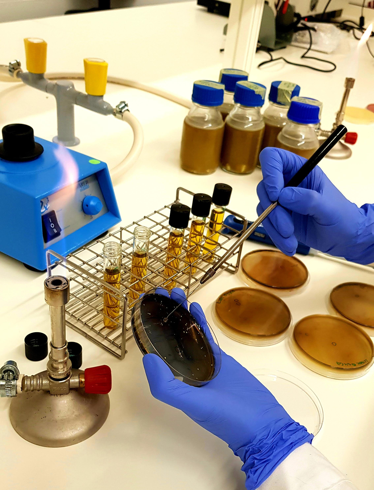
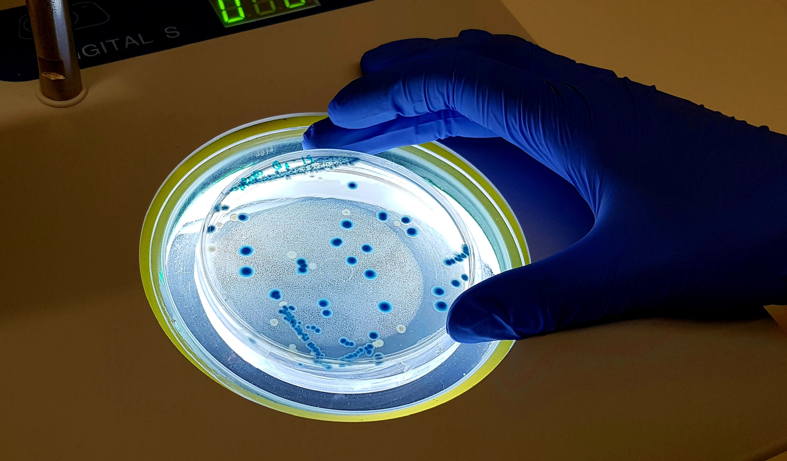
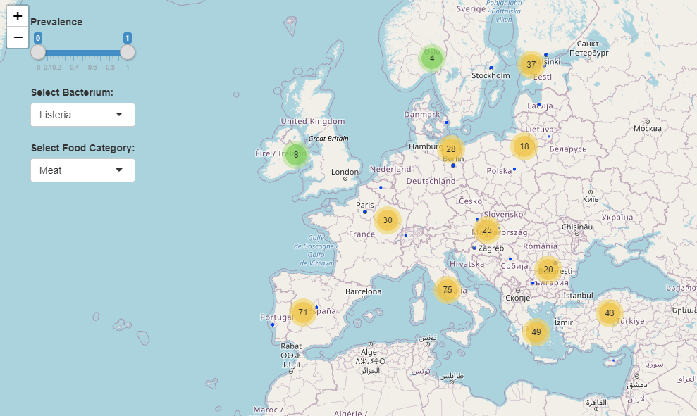

She is a Food Engineer (Honours) from the National Agricultural University La Molina (Peru) and holds a PhD in Biosystems Engineering from University College Dublin, Ireland. She is currently Principal Investigator at the CIMO Mountain Research Centre (Polytechnic Institute of Bragança, Portugal) where she leads the “Food Quality and Safety Analytics” research team.
A database of systematically formatted occurrence data of biological hazards in foods
Pathogens In Foods
- Facilitates retrieval, visualisation and meta-analysis of microbiological occurrence data extracted from published articles

Pathogens In Foods
- The web resources enables you to:
- Search for detection and enumeration data of pathogens in foods
- Obtain overall visual and descriptive analyses
- Generate summarisation statistics of data selections

Pathogens In Foods
- Dynamic Graph Views
- Online Data Analysis System

Pathogens In Foods
Pathogens-in-Foods is a database of systematically formatted occurrence data of the most important biological hazards in foods randomly surveyed from European farms, processing facilities, retail establishments and restauration.
Under a harmonised arrangement, Pathogens-in-Foods brings together prevalence and enumeration data of pathogenic bacteria, parasites and viruses in foods, extracted from published peer-reviewed articles and reports.
This web resource enables the user to:
- Search for detection and enumeration data of pathogens in foods produced, commercialised and/or consumed in Europe;
- Gain insightful visual and descriptive analysis through interactive dashboards


Our Team
Our team is made up of people from different areas. See a brief description of us.
Ursula Gonzales-Barron
CIMO - IPB
Vasco Cadavez
CIMO - IPB
He is an Engineer in Animal Husbandry, with a Master Degree in Animal Production and a PhD in Animal Science from the Portuguese University of Trás-os-Montes and Alto Douro. Currently, he is a Coordinator Professor in the Animal Science Department of IPB, Portugal; and leads the “Food Quality and Safety Analytics” research team at CIMO-IPB.

Moez Sanaa
Anses
He is a Doctor of Veterinary Medicine and holds a Master of Science and a PhD in Epidemiology and Biostatistics (Paris XI University, Faculty of Medicine, France). He currently leads the Food Safety Risk Assessment Unit at the French Agency for Food, Environmental and Occupational Health and Safety (Anses). He has been selected and served for four terms (3 years each) as an expert in two EFSA scientific panels, AHAW and BIOHAZ and participated in several dozens of ad-hoc scientific working groups.

Anne Thebault
Anses
She is a Doctor in Veterinary Medicine (Maisons-Alfort, France) and holds a PhD in Epidemiology and Biomathematics (AgroParisTech, Paris, France) and a Master Degree in Oceanography (Paris 6, France). She is a Senior Scientist specialised in quantitative risk assessment, epidemiology and mathematical modelling at Anses.

Pauline Kooh
Anses
She is a food microbiologist and holds an MSc in Food and Biotechnology Process Engineering, and an MSc in Food Industry Management (National Food Science Engineering Institute - Massy, France). She is currently a Scientific Officer at Anses, where she leads projects related to microbiological risk assessment, food hygiene and microbiology.
Lucas Ribeiro Mendes
ESTIG - IPB
He is a MSc student in Information Systems at IPB, who is currently working on Data Science field. He provides technical support to the Pathogens-In-Foods database.

Template by Bootstrapious. Ported to Hugo by DevCows.